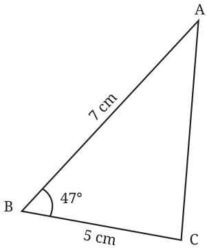
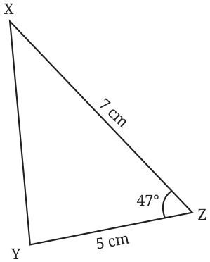
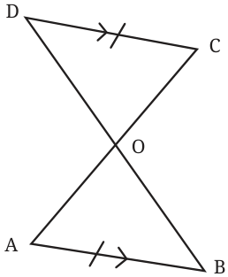
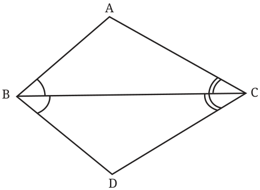
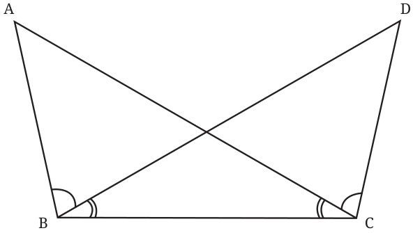

- Identify whether the triangles below are congruent. What conditions did you use to establish their congruence? Express the congruence.


- Given that CD and AB are parallel, and \(AB = CD\), what are the other equal parts in this figure? (Hint: When the lines are parallel, the alternate angles are equal. Are the two resulting triangles congruent? If so, express the congruence.)

- Given that \(\angle ABC = \angle DBC\) and \(\angle ACB = \angle DCB\), show that \(\angle BAC = \angle BDC\). Are the two triangles congruent?

- Identify the equal parts in the following figure, given that \(\angle ABD = \angle DCA\) and \(\angle ACB = \angle DBC\).
